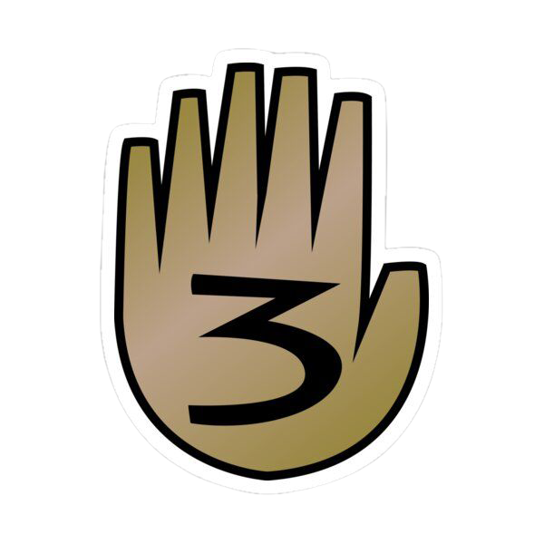

O Diário Perdido

.... - - .--. ... ---... -..-. -..-. .-- .-- .-- .-.-.- -.-- --- ..- - ..- -... . .-.-.- -.-. --- -- -..-. .-- .- - -.-. .... ..--.. ...- -...- ..--- .--- -. .---- --- . -.. .-.. -. .--. --